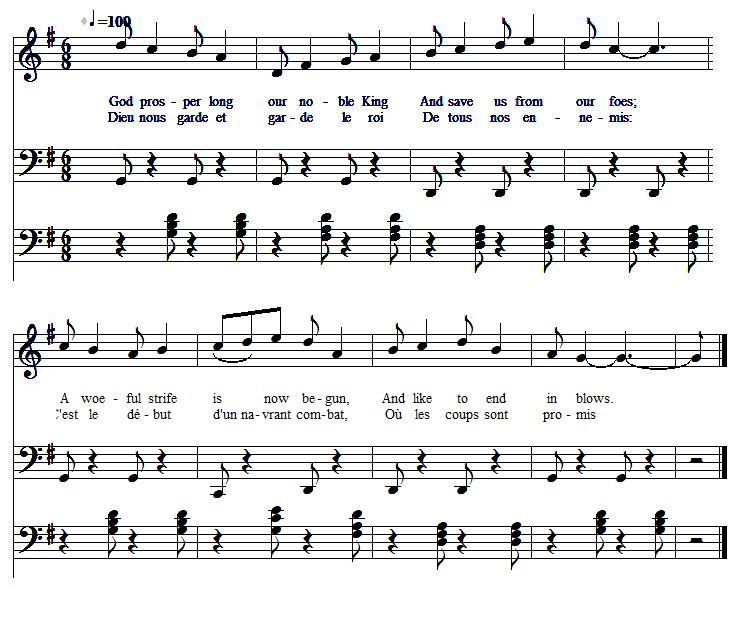
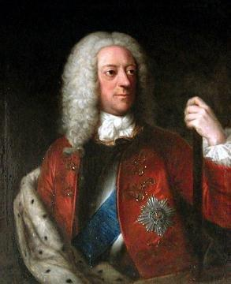

God prosper long our noble King
Dieu protège le Roi longtemps
Embezzlement of public funds in aid of Hanover
Détournement de fonds publics au bénéfice d'Hanovre
from "The True Loyalist" , 1779, page 74
Tune - Mélodie"Chevy Chase" (2nd Tune)
as stated in "The True Loyalist" , 1779, page 74
Sequenced by Christian Souchon
Tune - Mélodie
Another arrangement of "Chevy Chase", 2nd tune
Sequenced by Lesley Nelson (see Links)
|
To the tune:
As explained in connection with the song Towly's Ghost , there are several tunes known by the name "Chevy Chase". The present variant appears in Thomas d'Urfey's Pills to purge Melancholy . The lyrics also begin with "God prosper long our noble King". (The tune usually set to Derwentwater is sometimes directed to accompany the ballad "Chevy Chase".) |
 |
A propos de la mélodie:
Comme cela est expliqué à propos du chant Le fantôme de Townley plusieurs timbres sont connus sous le nom de "Chevy Chase". La présente variante se trouve chez Thomas d'Urfey dans ses Pilules contre la mélancolie . Le texte commence aussi par "God prosper long our noble King". (L'air sur lequel se chante ordinairement Derwentwater est parfois cité comme celui qui accompagne la ballade "Chevy Chase".) |

|
A SONG
To the tune of Chevy Chase 1. God prosper long our noble KING [1] And save us from our foes; A woeful strife is now begun, And like to end in blows. Betwixt the K[in]g and patriots, Who struggle to maintain Our right, our liberties, and trade, Against th'insults of Spain. [2] 2. But German G[eor]ge, our chosen K[in]g, To those he does prefer, The safety, riches and the peace Of his dear Hanover. [3] For this h'ingloriously deserts, The cause of liberty, Our freedom and our friends he sells For a neutrality. [4] 3. This cowardly P[rin]ce, with high hot spurs, Does tamely now look on, See England's trade and Austrian's pow'r, By France and Spain undone, Three hundred thousand English pounds, Was granted cheerfully, At's own desire, for to defend The Queen of Hungary. [5] 4. Twelve thousand foreign forces rais'd, [6] Her interest to advance, Our cause and Europe to preserve Against the views of France. Two hundred sail of men of war Were sporting on the main, While twice as many merchant ships Were carried into Spain. [7] 5. Our credit's sunk our money spent, Our trade is quite decay'd, Our taxes rise, our debts increase, By Hanover betray'd. Well may we read our dreadful sin In our dire punishment: A foreigner we brought, - and sent Our own in banishment. Source: "The True Loyalist or Chevalier's Favourite: being a collection of elegant songs, never before printed. Also several other loyal compositions, wrote by eminent hands." Printed in the year 1779. Page 74 |
 King George II (1683 - 1760) |
CHANT
sur l'air de Chevy Chase 1. Dieu nous garde et garde le ROI, [1] De tous nos ennemis: C'est le début d'un navrant combat, Où les coups sont promis Entre Georges et cet Etat Luttant pour la survie De notre commerce et pour nos droits Que l'Espagne injurie. [2] 2. Georges le Guelfe a, quant à lui, D'autres priorités: La paix pour son Hanovre chéri Et sa prospérité. [3] Il fuit ignominieusement L'auguste liberté Nos amis, il les vend au nom De la neutralité. [4] 3. Chaussé d'éperons, ce couard Regarde sans broncher L'Autriche et nos biens dépecés par Espagnols et Français. Trois cent mille livres sterling De bon cœur consenties Pour défendre, selon sa consigne, La Reine de Hongrie. [5] 4. On leva dans son intérêt Douze mille soldats [6] Afin de protéger des Français L'Europe et Britannia. Deux cents vaisseaux de guerre ont dû Couler dans l'océan; Partir pour l'Espagne deux fois plus De navires marchands. [7] 5. N'ayant plus de crédit, ni d'or, Nos marchands sont ruinés. Seuls augmentent les impôts qu'Hanovre, Le traître, a créés. A la mesure du péché L'on doit être puni: Pour roi nous prîmes un étranger. Le nôtre fut banni. (Trad. Christian Souchon (c) 2011) |
|
[1]
King
: the king referred to is James VIII/III (line 1) , then George II (line 5)
[2] Insults of Spain : Before the War of Austrian Succession started in 1740, France had been preoccupied with her Bourbon ally Spain's struggle with Britain which had begun in 1739, the famous ‘War of Jenkins's Ear’ . This had its origins in the confrontation between the rising British empire and the extensive and alluring Spanish possessions. British efforts to expand trade with Spain's colonies, in defiance of trade regulations, led to a series of clashes and to war over the alleged cutting off of Capt Jenkins's ear by a Spanish coastguard. [3] His dear Hanover : " The safety of Hanover, and its aggrandisement, were the main objects of the British court." On this principle it was, that, in 1719, George I. purchased from the queen of Sweden (for a million of Rix dollars, i.e. £ 175,000), and annexed to his German dominions, the duchies of Bremen and Verden. Enormous sums of money were granted, with Walpole 's assent, to George I, then to George II who led Britain's diplomacy, abiding by this principle, though they were supposed to use them "as they should think necessary to employ in securing the trade of England, and restoring the peace of Europe". "Walpole " said the king of Prussia, "had captivated his majesty by the savings which he made out of the civil list, from which GEORGE filled his Hanoverian treasury!" When he resigned in 1742, Walpole had derived for himself £ 1,453,400 from his post in ten years! [4] Neutrality : By the Treaty of Berlin (July 1742) Frederick II of Prussia secured Habsburg acceptance of his gain of Silesia and left the war. The struggle now entered a particularly indecisive phase, with few battles, much manoeuvring by the armies which led nowhere, and futile diplomacy . [5] Queen of Hungary : On the 2Oth October 1740, died the Austrian emperor Charles VI. He was succeeded by his daughter Maria Theresa. In April 1741, George II informed the House of Peers, that he had ordered troops of Denmark and Hesse Cassel, to be ready to march to her assistance. Sir Robert Walpole moved, that an aid of two hundred thousand pounds should be granted to her. The opposition protested against any such interposition in the affairs of Germany, remarking that "had such a connection been foreseen, it might for ever have precluded from the succession that illustrious family". In fact the "Queen of Hungary" received five hundred thousand pounds [6] Twelve thousand forces : George II by one of his endless treaties had engaged to defend Maria Theresa's dominions, if attacked, with an army of twelve thousand men. [7] Men of war, merchant ships : the supplies of the year 1742 amounted to near six million sterling. "We now see one good reason why the French and Spanish privateers, took three thousand two hundred and thirty-eight British vessels. The money which ought to have been expended in squadrons for their protection, was bestowed on those enemies of mankind, the despots of Germany." These notes are copied from an account in "The Bee", vol.9, by Timoty Thunderproof, dated 16 April 1792, mostly quoting Tobias Smollet(t) |
[1]
Roi
: le roi dont il est question est Jacques VIII/III (ligne 1), puis Georges II (ligne 5)
[2] Que l'Espagne injurie : Avant que n'éclate la guerre de succession d'Autriche en 1740, la France et son alliée Bourbon, l'Espagne étaient engagées dans une guerre contre l'Angleterre qui commença en 1739, la fameuse ‘Affaire de l'oreille de Jenkins’ . L'origine était la confrontation entre l'Empire britannique en cours d'édification et les immenses possessions espagnoles qu'il convoitait. Les efforts des Anglais pour forcer les colonies espagnoles à commercer avec eux en dépit des règles qui s'imposaient à elles furent à l'origine de frictions, puis d'une guerre prenant pour prétexte l'oreille du capitaine Jenkins qu'un garde-côte espagnol aurait soi-disant coupée. [3] Son Hanovre chéri : "La sécurité d'Hanovre et son agrandissement étaient les principaux objectifs des rois d'Angleterre." C'est en application de ce principe qu'en 1719, George I. acheta à la Suède pour les annexer à ses territoires allemands, les duchés de Brême et de Verden (au prix d'un million de thalers, soit £ 175,000). D'énormes sommes d'argent furent allouées, avec l'accord de Walpole , à Georges I, puis Georges II qui étaient maîtres de la diplomatie anglaise, dans le respect de ce principe, alors qu'ils étaient censés les utiliser "comme ils le jugeraient nécessaire à la sécurité du commerce britannique et à la restauration de la paix en Europe". " Walpole " aimait à dire le roi de Prusse, "tenait sa Majesté par les économies qu'il lui permettait de faire sur sa liste civile et avec lesquelles GEORGES renflouait les finances de Hanovre!" Quand il se retira en 1742, son poste avait rapporté à Walpole 1,453,400 en dix ans! [4] Neutralité : Par le Traité de Berlin (juillet 1742), Frédéric II de Prusse s'assura que les Habsbourg ne remettaient pas en cause son annexion de la Silésie et cessa la guerre. Les combats entrèrent alors dans une phase particulièrement indécise, avec peu de batailles, beaucoup de manœuvres ne menant à rien et de diplomatie d'apparat. [5] Reine de Hongrie : Le 20 octobre 1740 mourut l'empereur d'Autriche, Charles VI. C'est sa fille Marie-Thérèse qui lui succéda. En avril 1741, Georges II informa la chambre des Pairs, qu'il avait mobilisé des troupes de Danemark et de Hesse Cassel pour éventuellement venir à son secours. Sir Robert Walpole proposa qu'une aide de deux cent mille livres lui soit accordée. L'opposition en disant que "si l'on avait connu l'existence de ces engagements, cette illustre famille aurait été exclue de la succession." En réalité, ce furent cinq cent mille que reçut la "Reine de Hongrie". [6] Douze mille soldats : Georges II, par l'un de ses innombrables traités s'était engagé à fournir douze mille hommes pour la défense des territoires de Marie-Thérèse. [7] Vaisseaux de guerre, navires marchands : les subsides de 1742 avoisinèrent six millions de livres. "Nous comprenons à présent l'unique raison pour laquelle les corsaires français et espagnols ont pu prendre 3238 vaisseaux anglais. L'argent qui aurait dû servir à financer leur protection fut consacré à ces ennemis de l'humanité que sont les despotes allemands." Ces notes sont tirés d'un article de Timoty Thunderproof, paru dans le "Bee", vol.9, daté du 16 avril 1792, qui cite abondamment Tobias Smollet(t) |
|
|
|